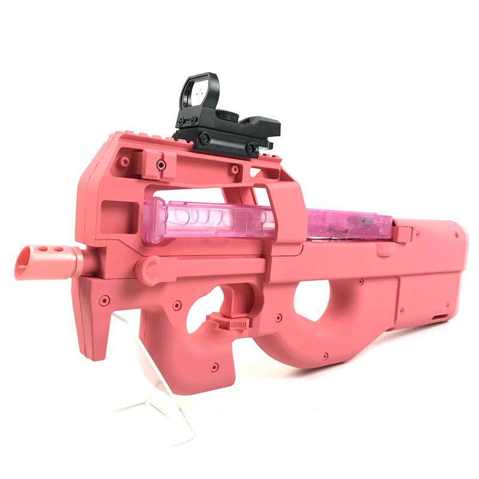
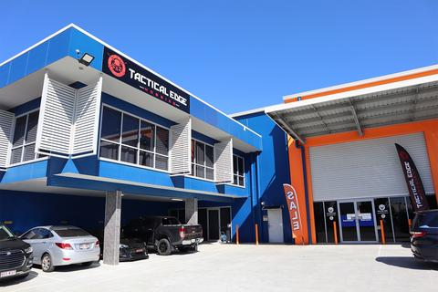

Petition for Gel Blasting
The Problem
The issue with gel blasting in Australia is that you can't do it (unless you are in Queensland, good on us). The nation deserves to be able to enjoy a harmless activity that doesn't need to be suppressed.
"But gel blasters are dangerous"
If I said gel blasters weren't dangerous, I would be lying. Yes, they can cause minor skin damage and - in extreme cases - severe eye damage, but by that term, you should ban AFL. Far more people are injured, and in much more severe ways, by AFL. And nothing stops an excellent AFL player from punting a rock at someone or tackling an innocent civilian.
By banning gel blasters, you are only affecting innocent people and buiness. Hundreds of people in South Australia alone lost their jobs due to the ban, and many of them likely ended up on the streets or sleeping in their cars. People who had spilled their heart and souls (and wallets) into gel blasting had their favourite hobby snatched away in an instant. This shouldn't happen to innocent Australians.
Also, introducing the laws isn't going to stop crime. People who want to break the law aren't going to, well, listen to the law. People with bad intentions already have gel blasters, so banning them won't change anything. You should start checking homes of gel blaster owners and registering them, rather than seizing the toys.
"Gel blasters are imitation weapons and, therefore, dangerous"
The first part of that statement is true. Probably about 50% of gel blasters look realistic, while the other 50% have tell-tale orange tips or are bright colours (take the pink P90 below). This doesn't mean they should be banned.
Imitation weapon laws regarding gel blasters are essential. They shouldn't be changed. They just shouldn't ban them. I 100% agree, and hopefully you do too, that gel blasters belong in a locked container while stored, and carried in a bag that is not transparent or outlining a gun while in transport. They can easily br used as imitation weapons. But to ban them would be like banning those projectile-free plastic guns you find for $3 at K-Mart or banning cap guns. People should stil be prosecuted for scaring/attacking others with gel blasters. But, like brandishing a baseball bat in public, they should be perfectly legal to own and use in a passtime or sporting environment.

What needs to change
I firmly believe that Queensland has it right with gel blasters. I think that we should be a role model for all the other states in their journey towards a just and proper approach to the enjoyable passtime that is gel blasting.
I believe the following changes should occur in all other states bar Queensland:
- Removal of the required gun liscensing for owning a gel blaster
- Legalising the use of gel blasters on hid-away private property
- Compensating for the massive losses businesses sustained from the actions of the police
- Giving back any seized gel blasters
- If the above step is not possible, then compensating for the loss of gel blasters gel blasting players sustained when their gel blasters were seized
- Keeping laws in place that class gel blasters as imitation firearms and thus cannot be shown/used in public places
I accept if the police believe gel blasters should remain registered. That is reasonable. Just as long as they don't need a firearms license, then we will be free to enjoy the sport we all love.
